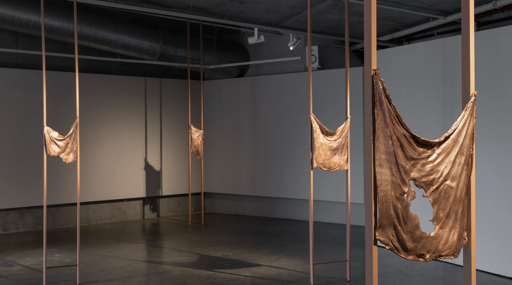
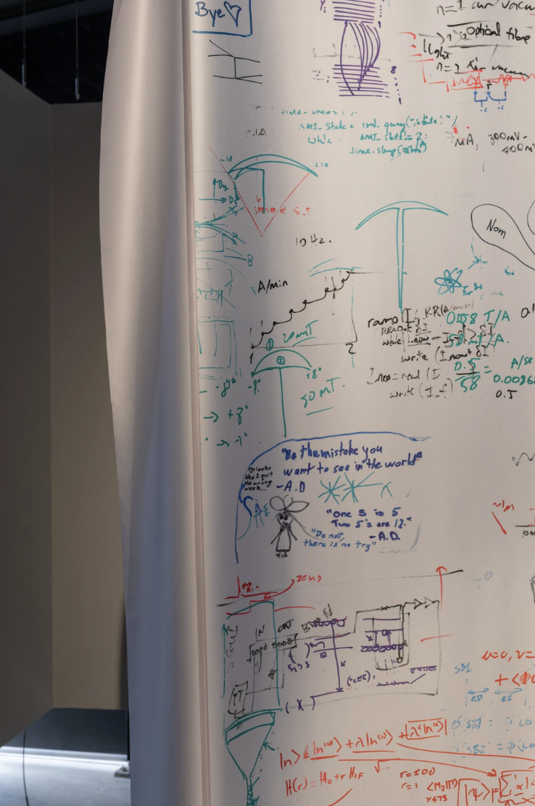
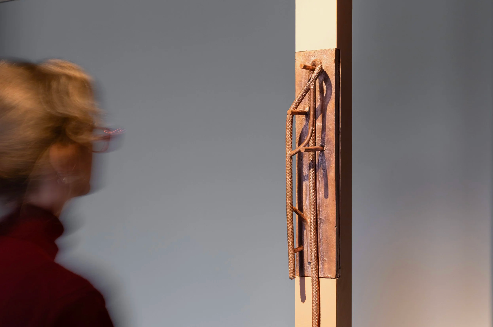
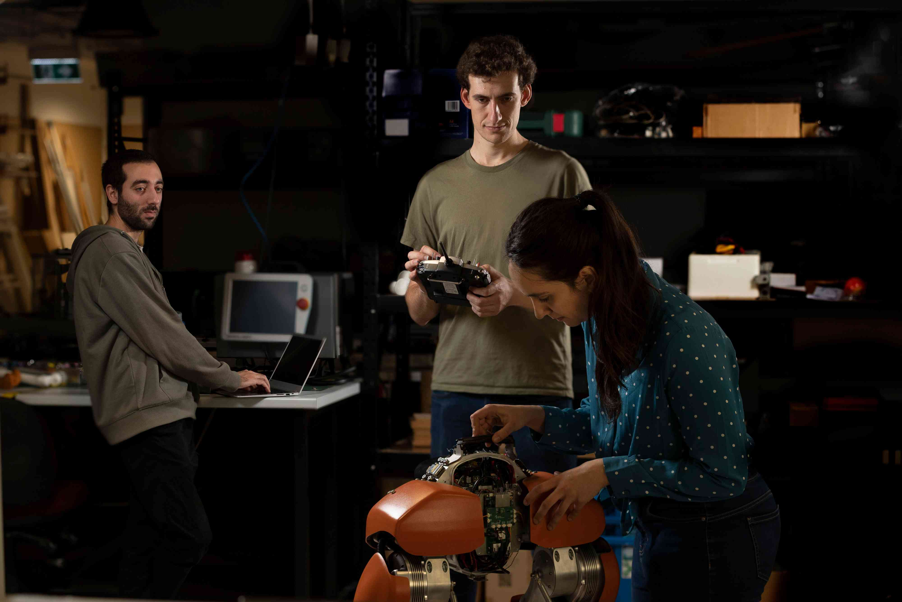

About the Program.

A four month (one semester) artist residency, February to May 2027, hosted by the School of Computer Science at the University of Sydney.Artists are the best people to interrogate new technologies: their capabilities, their impacts, their assumptions and implicit beliefs. The Artist in Residence program at the School of Computer Science is intended to support artists working on projects that involve serious consideration of computation and its related subjects. By providing residents with access to the people and facilities in the School of Computer Science at the University of Sydney, as well as the time, space, and funding to pursue their work, we hope to support residents in developing world-class technology-informed art.

Pictures shown are photographs from the exhibit materialnonmaterial by Todd Robinson (2026). Robinson is a multidisciplinary artist who completed a 12-month artist residency program at the Quantum Integration Lab at the Sydney Nanoscience Institute.
Ideal Applicants.
Applicants should be interested in incorporating, critiquing, representing, or otherwise making use of cutting edge computer science technologies. Computer science topics could include, but are not limited to, optimisation, machine learning, foundation models, robotics, computer vision, language models, blockchain, cybersecurity, complex systems, networking, formal methods, and theoretical computer science.

Applicants could be early career or further along; we will evaluate candidates based on their career stage. Applicants should have some history of working with computation, or demonstrate the potential to do so. Applicants should be interested in working with students and staff at the School of Computer Science.
Ideal candidates will take maximal advantage of this opportunity specifically, rather than those looking for a more generic residency program.
Provided Support.
We can provide a variety of kinds of support at the residents' request, subject to faculty agreement.
- Funding may be used to compensate residents’ time and purchase equipment, software subscriptions or products (e.g. API credits).
- Residents may also have access to certain equipment and spaces on USYD campus, including but not limited to, GPU machines, the Makerspace with 3D printers and electronics stations.
- Residents will have access to experts within the faculty, and may request to collaborate with specific faculty members or HDR students for their intended project.
- The program coordinators will support the securing of gallery spaces for exhibitions and organising of workshops and other public outreach initiatives at the University of Sydney.
- Office space could potentially be provided (tentative)
Application Process & Timeline.
Artists submit a resume, updated portfolio, project proposal, and budget proposal.
- Proposal: 500 words describing your intended use of the residency. This should explain your area of interest, how the residency will support your work, and any concrete outcomes you expect or desire.
- Budget: Please include a budget outline and justification. Applicants can request $1,000-$15,000 to support their work. The program has a total budget of $30,000 for all residents selected.
A panel consisting of representatives from the School of Computer Science and the Sydney College of the Arts will select residents based on their fit for the residency and the cohort diversity.
The number of artists / collectives selected will be based on our budget constraints.
Program Timeline:
- September 1, 2026: Applications open
- October 31, 2026: Applications close at 23:59
- December 1, 2026: Applicants contacted
- February - March 2027: Program duration
- April - June 2027: Artwork showcase!
Reading List.
Interdisciplinarity requires more support, more experimentation, and more time. To master interdisciplinary art the artist must absorb higher costs and risks, limiting who gets to develop and contribute their interdisciplinary findings.
As part of encouraging all applicants of all career stages and backgrounds to apply, an optional reading list has been curated for those who may be interested but unfamiliar.
-
Systems, edited by Edward A. Shanken (2015)
Systems is a collection of essays mapping the historical landscape of systems-based art and its altering implications on our material reality. It investigates and answers both the ‘why art in computer science’ and the ‘why computer science in art’. Hard-copy available at Fisher Library. -
Dream Machines by Steve Connor (2017)
Dreaming of, with, and as machines. This book attempts to bridge the (perceived) gap between fantasy and machinery, arguing that “all machines are dream machines” (p.65). Offers alternative ways of thinking of machines, machine-making, and dream-making. Available through the Open Humanities Press. -
Thinking with AI: Machine Learning the Humanities, edited by Hannes Bajohr (2025)
Aptly named, Thinking with AI: Machine Learning the Humanities encourages humanities researchers to engage with contemporary Artificial Intelligence as an extension of, and an instrument to answering long-standing humanistic discourses. Available through the Open Humanities Press. - AI Art: Machine Visions and Warped Dreams by Joanna Zylinska (2020)
- Digital Art and Meaning by Roberto Simanowski (2011)
- Writing, Medium, Machine: Modern Technographies, edited by Sean Pryor and David Trotter (2016)
FAQs.
Should applicants be based in Sydney?
Can funding be used to compensate for commuting time / travel expenses / accommodation?
How can I find suitable academics?
Are artists required to nominate a faculty member to work with?
What artistic mediums are you open to?
Apply.
Apply by October 31, 2026 at 23:59 AEST through this application form. Please direct any further questions to katy.gero@sydney.edu.au.